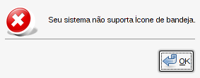

Manual de Instalação do SGA Livre
Retornar à Página InicialÍndice
Introdução
A instalação do servidor do SGA Livre requer conhecimento técnico em Linux. Então, sugerimos que este roteiro seja executado por um usuário familiarizado com instalação de pacotes e configuração básica de Apache, PHP, Postgresql e Java.Este roteiro está baseado (e Recomendamos) Sistema Operacional GNU/Linux Debian 5 - Lenny.
Como pode ser visto na seção 'Arquitetura' do manual de introdução, o SGA Livre pode ser instalado separando servidor de aplicação web, banco de dados e controlador de painéis. Essa decisão deve ser tomada com base no volume de acesso e uso do sistema. Porém, para a maioria dos usuários, instalar todos esses componentes num único servidor será suficiente. Este manual pressupõe que todos os componentes estarão instalados na mesma máquina servidora.
Pré-requisitos de hardware:
A definição de requisitos de hardware deve ser baseada no volume de acesso esperado.
Quanto maior o número de unidades de atendimento, mais adequada deve ser a máquina servidora.
Em geral, servidores com dois processadores, 2 GB de memória RAM e 50 GB de espaço em disco devem atender bem para pequenos volumes.
Pré-requisitos de software:
Postgresql versão 8.3
Apache versão 2
Openjdk-6-jre ou Sun-java6-jre
PHP versão 5.2.0
GD versão 2.0
Multibyte String
PDO versão 1.0.0
PDO PgSQL versão 1.0.2
Lista de Pacotes para Debian Lenny:
apt-get install postgresql-8.3 postgresql-client-8.3 apache2 openjdk-6-jre php5 php5-cli libapache2-mod-php5 php5-gd php5-pgsql
Dica:
após instalar os pacotes, e antes de prosseguir com a instalação,
certifique-se que o usuário padrão de administração do
Postgresql esteja habilitado.
Exemplo no Debian para habilitar o usuário padrão postgres:
$ su - postgres
$ psql
$ alter user
postgres with password 'defina_sua_senha'; (com aspas)
Instalação do Servidor Web e Banco de Dados
Nesta seção será descrita a instalação do Servidor Web e do Banco de Dados.
Pacotes de instalação
O pacote completo de instalação do SGA Livre é composto de:- Para instalação no Servidor
- sgalivre-servidor-web_x.x.x.tgz - Pacote de instalação do Servidor Web e Banco de Dados.
- sgalivre-controladorpaineis_x.x.x.tgz - Pacote de instalação do Controlador de Painéis.
- Para instalação do Painel de Senhas
- sgalivre-painel_x.x.x.tgz - Pacote de instalação .tgz do Painel de Senhas.
- sgalivre-painel_x.x.x.deb - Pacote de instalação .deb do Painel de Senhas.
Onde x.x.x signifca a versão. Ex.: 1.0.0
Primeiro Passo - Início
Descompactar o sgalivre-servidor-web_x.x.x.tgz na área web do servidor apache2.
Acessar o instalador web, conforme exemplo abaixo:
Exemplo: http://<ip_do_servidor>/sgalivre
Ao acessar o SGA pela primeira vez, a página de instalação será exibida. Clicando no botão "Próximo" o usuário será levado a página de verificação de requisitos.
Segundo Passo - Verificação dos Requisitos
Esse passo da instalação mostra ao usuário os requisitos mínimos do SGA Livre e faz a comparação com as versões instaladas no servidor.
Em Permissões Requeridas, o SGA Livre aponta a necessidade de permissão de escrita no arquivo Config.php. O SGA Livre mostra o caminho através dos diretórios para encontrar o arquivo. O usuário deve alterar com chmod, adicionando a permissão de escrita. Após disso, basta atualizar a página e verificar se a alteração foi efetuadas com sucesso.
Em Configurações Requeridas, encontramos o short_open_tag onde o valor requerido deve ser "On". Caso o valor seja "OFF" basta alterar o valor da chave no arquivo PHP.ini. No Debian, geralmente fica em /etc/php5/apache2/php.ini.
Em Configurações Recomendadas, o magic_quotes_gpc deverá ter o valor "OFF", no caso contrário basta alterar o valor no arquivo PHP.ini
É necessário reiniciar o Apache após alterar o php.ini.Os itens que não estão em conformidades com o exigido pelo SGA Livre ficam destacados em vermelho.
Terceiro Passo - Licença
Nesta parte da instalação, o usuário é orientado a ler a licença do SGA Livre - O SGA é disponibilizado sob a Licença Pública Geral (GPL - versão dois, publicada em junho de 1991). Após concordar com os termos da Licença, o usuário poderá avançar para o próximo passo.
Quarto Passo - Configuração do Banco de Dados
Nesta estapa da instalação, o administrador deverá inserir as opções de conexão ao servidor de banco de dados Postgresql, que será utilizado pelo SGA Livre.
Durante a configuração do banco o usuário deverá inserir o nome do Host (ou IP) onde está o banco; a porta de comunicação do sistema com o banco; o nome do usuário administrador do banco; a senha deste usuário e o nome do banco a ser criado. Antes de avançar para a próxima etapa, o banco deverá ser testado.
Atenção: O banco de dados especificado na instalação será criado automaticamente se não existir, caso exista será recriado e todos os dados existentes no banco antigo serão PERMANENTEMENTE PERDIDOS.
Quinto Passo - Configurações da Conta Administrador
Nesta etapa o usuário vai configurar as opções da conta Administrador do SGA Livre. Será a conta com a qual o usuário irá acessar a primeira vez no sistema para configurá-lo. O administrador terá acesso total ao sistema. Esta conta poderá ser editada, entretanto, nunca poderá ser excluida do sistema.
As informações aplicáveis a conta Administrador durante esta etapa são: Usuário - nome usado no acesso ao sistema; Nome - nome do administrador; Sobrenome; Senha - senha para acesso ao sistema; e Confirmar Senha. Ao preencher todos os campos o usuário poderá avançar na instalação
Sexto Passo - Aplicar
Esta é a etapa final de instalação. Clicando em instalar, o SGA Livre será instalado com as configurações obtidas durante a instalação. Uma mensagem indicando o sucesso da operação será exibida e posteriormente a página de acesso inicial será exibida.
A partir de agora, o usuário poderá logar no sistema com a conta criada.
Será necessário configurar o sistema de acordo com suas necessidades.
Instalação do Controlador de Painéis
Esta seção abordará a instalação do Controlador de Painéis do SGA Livre.
O Controlador de Painéis é uma aplicação Java centralizada que é responsável por enviar as senhas chamadas pelos atendentes para os Painéis de Senhas das Unidades de Atendimento, não importando onde elas estejam. Basta ter uma conexão de rede disponível. O envio das senhas é extremanente leve e rápido, pois é constituído de um datagrama (pacote) UDP bem curto.
Primeiramente, o usuário deverá descompactar o arquivo "sgalivre-controladorpaineis_x.x.x.tgz".
O arquivo server.conf contém as informações de configuração do Controlador de Painéis. É muito importante que o administrador insira corretamente as informações nesse arquivo.
# DATAPREV 2009
# SGA Livre
# CONTROLADOR DE PAINEIS 1.0.0
# ARQUIVO DE CONFIGURAÇÃO DO CONTROLADOR DE PAINEIS
# server.conf
#
# Define a classe do Driver SQL a ser usado.
# O Driver deve ser adequado ao RDMBS em uso.
# PostgreSQL -> org.postgresql.Driver
jdbcDriver = org.postgresql.Driver
# Define a URL JDBC
# Exemplo: jdbc:<rdbms>://<host>/<database>
jdbcUrl = jdbc:postgresql://127.0.0.1/sgalivre
# Define o usuario do SQL
jdbcUser = postgres
# Define o password do login SQL
jdbcPass = senha
# URL do Servidor Web
# Define a URL que irá retornar a lista de Unidades
# Essa URL é enviada para o painel, que a utiliza para obter a lista de unidades
# Não utilizar endereço de loopback (l27.0.0.1)
urlUnidades = http://10.0.0.2/sgalivre/painel/get_unidades.php
# URL do Servidor Web
# Define a URL que irá retornar a lista de Serviços
# Essa URL é enviada para o painel, que a utiliza para obter a lista de serviços a partir de uma unidade
# O token %unidade_id% é substituido no cliente pela unidade selecionada
# Não utilizar endereço de loopback (l27.0.0.1)
urlServicos = http://10.0.0.2/sgalivre/painel/get_servicos.php?id_uni=%id_unidade%
# Intervalo de consulta (em milésimos de segundo)
# Define o intervalo de consultas SQL em busca de novas senhas
# Um intervalo muito grande aumenta o tempo de resposta e pode permitir que uma quantidade grande de senhas
# acumule, causando um pico de processamento.
# Um intervalo muito pequeno pode causar impacto na performance do banco devido ao excesso de consultas.
intervaloConsulta = 100
# Tempo limite (em segundos) que um Painel será considerado como inativo caso nao faça contato.
# Os painéis enviam sinais de vida baseados nesse intervalo.
# Um painel continua recebendo mensagens até ser dado como inativo.
timeoutPainel = 600
# Tempo limite (em segundos) que um Painel será considerado inexistente, e será removido da memória do Controlador e do Banco de Dados.
# Esta tarefa permite a liberação de recursos da maquina executando o controlador de paineis e impede o acumulo de lixo na tabela.
# Caso o Painel de Senhas na unidade esteja ativo, ou seja, iniciado antes deste tempo limite não será removido.
# padrão: 345600 segundos (96 horas)
removerPaineisIntervalo = 345600
# Horario(HH:MM:SS) no formato 24 horas em que o controlador de paineis irá executar a tarefa de limpeza de paineis inativos
# Esta tarefa passa por todos paineis e remove aqueles que estao inativos por tempo superior a <removerPaineisIntervalo>
# É altamente recomendado que esta tarefa execute em um horário de ociosidade do sistema.
removerPaineisHora = 23:50:00
Realizadas as configurações no arquivo server.conf, o Controlador de Painéis pode ser executado, através do script controladorpainel.sh.
O Controlador de Painéis deve permanecer em execução todo o
tempo.
Configuração do Cron
A configuração do Cron é opcional, mas recomendada. A idéia básica é agendar uma tarefa no cron para acumular todos os atendimentos nas tabelas de histórico do SGA Livre, liberando o sistema para o funcionamento no dia seguinte. Ou seja, é a mesma funcionalidade existente na opção "Reiniciar Senhas", existente no módulo Config. Global. A diferença é apenas a automatização do processo por meio de agendamento no servidor.Para isso, é necessário:
1) Criar um arquivo chamado ".pgpass" no diretório do usuário root contendo a senha e com permissão 0600.
Isto é necessário para permitir que o comando execute, sem a solicitação da senha do usuário do PostgreSQL.
Exemplo de conteúdo do arquivo (formato "hostname:port:database:username:password"):
*:*:sgalivre:postgres:senha
2) Criar agendamento no Cron:
0 23 * * * root psql -d database -U usuario -c "SELECT sp_acumular_atendimentos(now())"
Aviso Importante
Em algumas distribuições(como Debian e Ubuntu) o PostgreSQL pode estar configurado de forma mais restritiva, causando uma mensagem similar a:
PT-BR: psql: FATAL: autenticação do tipo Ident falhou para usuário "root"
EN-US: psql: FATAL: Ident authentication failed for user "root"
Nessas distribuições o usuário do PostgreSQL deve coincidir com o usuário linux.
Opcionalmente você pode alterar a configuração do PostgreSQL em pg_hba.conf:
Restritivo: local all all ident sameuser
Permissivo: local all all md5
Referência: http://www.postgresql.org/docs/8.3/static/libpq-pgpass.html
Instalação do Painel de Senhas
Nota importante:
Requer Java 6 (JRE) instalado.
A forma recomendada de instalação dos pacotes para o painel é via linha de comando:
Exemplo: sudo dpkg -i sgalivre-painel_x.x.x.deb na distro Ubuntu
--
É possível a instalação em outros sitemas operacionais (inclusive Windows). Entretanto, não será fornecido instalador para tal. Nesses casos, basta descompactar o arquivo sgalivre-painel_x.x.x.tgz e executar o arquivo "painel.jar".
Exemplo em outras distros Linux: java -jar painel.jar
Exemplo em Windows: "duplo clique em painel.jar".
O painel de senhas deverá ser instalado em todas as máquinas onde ficarão conectados os monitores que exibirão as senhas chamadas. Ao executar pela primeira vez, será exibida uma mensagem alertando que as configurações iniciais devem ser aplicadas. Como segue na imagem abaixo:
Obs.: Um bug conhecido (tela abaixo) do Java com o Compiz impede que o ícone de bandeja funcione corretamente. Nesse caso, basta desativar os efeitos visuais do Compiz. No Ubuntu fica no Menu Sistema, Aparência, aba Efeitos Visuais. Selecionar Nenhum.

A janela de configuração apresentada abaixo possui os campos
"IP do Servidor" - neste campo
deve ser colocado o IP do servidor onde está instalado o controlador de
paineis. Após inserir o endereço IP do Controlador de Paineis deve-ser clicar no
botão "Obter Unidades", para carregar no painel as unidades existentes
no servidor. Após obter as unidades pode-se selecioná-las no campo
"Selecione
Unidade". E após selecionar uma unidade serão exibidos no campo
"Serviço" os serviços cadastrados na unidade, deve-se então escolher
quais serviços serão exibidos neste painel.
ATENÇÃO: Essa etapa obter e
selecionar a unidade somente pode ser efetuada após a realização da
configuração do sistema, abordado no Manual do Usuário.
Salvando as opções de configuração o painel será cadastrado no servidor de paineis e o mesmo será iniciado.
O painel de senhas ficará instalado em aplicativos/acessórios. Quando executado o painel de senhas exibe um ícone junto ao painel do sistema operacioal, próximo a data.
Selecionando o ícone com o botão direito temos opções de configuração do painel, além das opções de "Exibir Painel","Sobre" e "Sair". Selecionando a opção "Configurar Serviços" a janela de configuração inicial é exibida. No caso da "Configuração de Layout" é exibida uma janela como a apresentada abaixo:
Para alterar as cores do painel deve-se clicar na área referente no painel exibido no monitor à esquerda e definir a cor daquela área. Abaixo temos as opções de monitor primário e secundário para o caso da utilização de mais de um monitor no computador em que o painel está instalado. Temos também na sequência as opções de sons a serem utilizados ao chamar senhas.
Por padrão o painel de senhas é iniciado automáticamente após o sistema operacional ser iniciado. Para ocultar o painel basta pressionar o botão esquerdo e direito do mouse. Abaixo temos um exemplo do painel.
Útima revisão deste documento: 21/10/2009